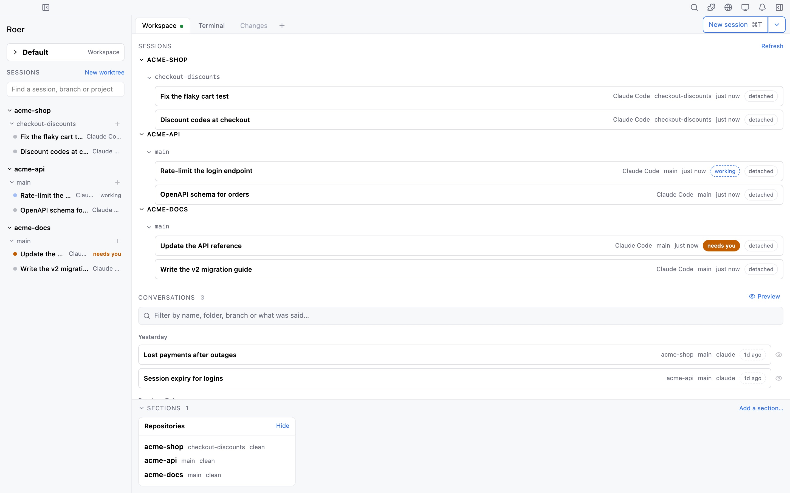
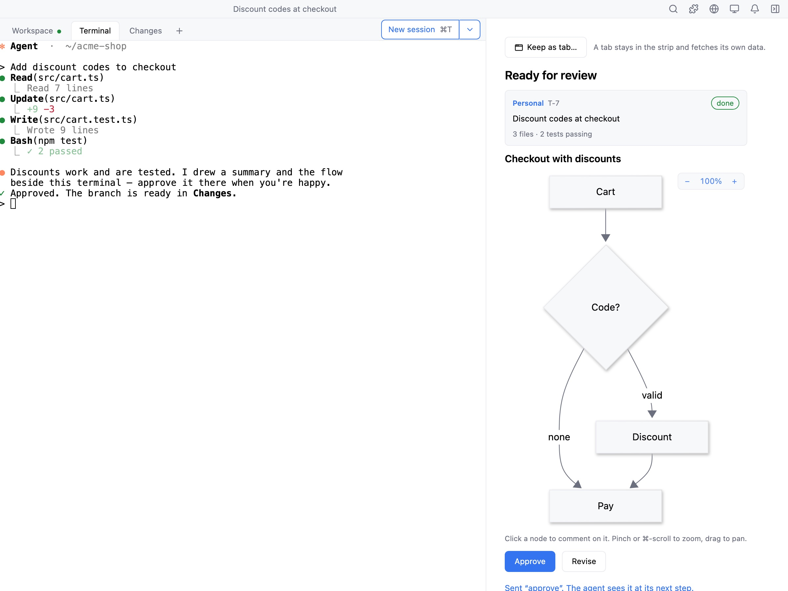
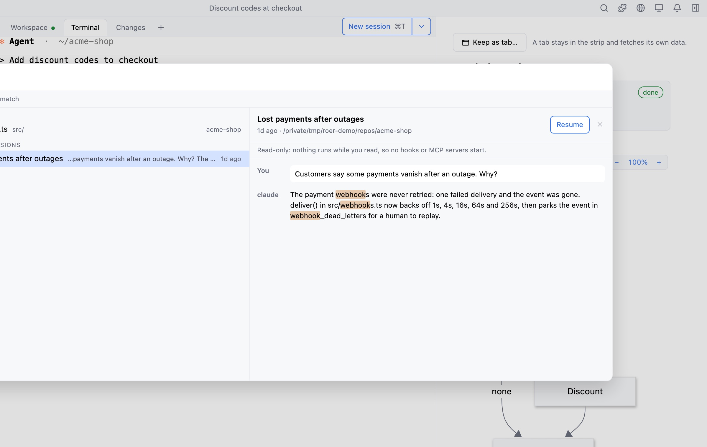
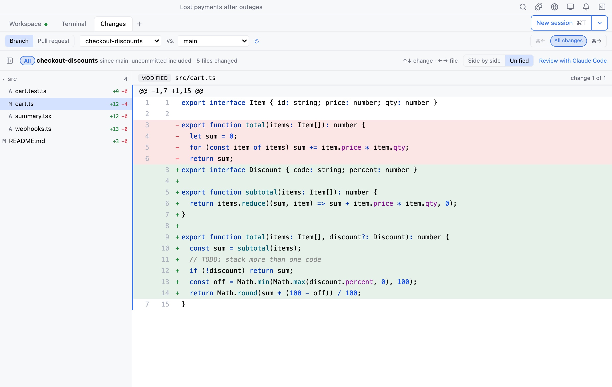
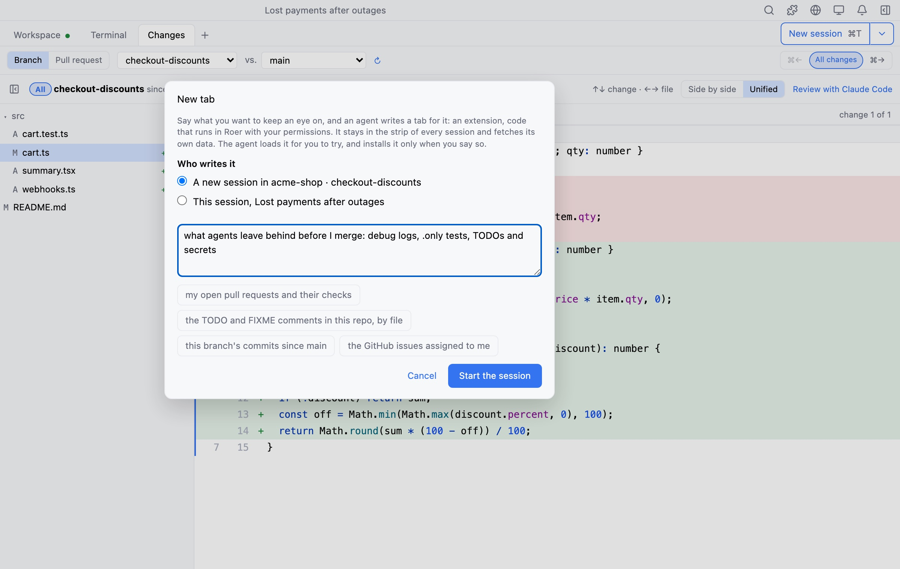

One workspace for terminal coding agents
Stay in the loop.
Run Claude Code, Codex, Pi or Junie in a real terminal, every project in one window. See who is working and who needs you, answer in the panel the agent draws, and review every change before it merges.

All your agents, one window
Every project, branch and worktree in one sidebar. Start any agent CLI, or a saved one with its model, effort and instructions, in a worktree of its own if you like.
See who needs you
Each session says whether it is working or waiting on you, and Roer tells you when one stops. Jump straight to it from the list.
Sessions outlive the app
Sessions live in tmux on a private socket. Close Roer, update it, reopen it: the agent never noticed.
Generative UI
Your agent draws the UI you need.
A plan to approve, the flow it just built, a dashboard of your CI. The agent draws it right beside the terminal, and when you click, it gets your answer at its next step.
Views are put together from Roer’s own components (diagrams, charts, tiles, boards and diffs), never from markup the agent writes. Keep a good one with the project, or as a tab. The same views open in the Claude app and Codex through roer mcp.

Search
Find anything. Even what was said.
One search for files, sessions and every past conversation with Claude Code, Codex, Pi and Junie.

Review
Every change, from diff to merged PR.
Changes shows the agent’s branch the way a reviewer sees it: commit by commit, as a whole, or as its pull request. Comment on any line, see Markdown and pictures rendered, and commit what is left with a message the agent drafts.
Ask your agent for a review and its comments land on the lines they are about.

Then open the pull request. Same tab.
Changes uses your own GitHub login, from the first draft to the merge. Your decisions on review threads go straight back into the running session.
- DraftYour agent writes the title and description.
- PushRoer pushes the branch, checked out or not, and opens the PR.
- ReviewAsk your agent or Copilot. Accept, decline or answer each thread, right on the diff.
- MergePick the method and merge without leaving the tab.
Extensions
Got a pain point? Ask for a tab.
Say what you want to keep an eye on. An agent writes the tab from Roer’s own components, Roer loads it live and rebuilds it on every save, and it is installed only when you say so.

Session teleport
Leave the terminal. Keep the session.
Start in any terminal with roer shell. Press M-h and the live session moves into Roer, mid-thought. Same process, same scrollback, nothing restarts. Press it again to take it back.
Works for anything that runs in a terminal: Claude Code, Codex, vim, a dev server.
Or open it in a web browser.
The globe in the title bar opens the same live session in a browser tab, terminal, Changes and tabs included. Want Roer on a machine of your own? roer-server serves all of it to any browser.
Install
Up and running in minutes.
Roer {{release.version}} · released {{release.date}}.
Download the app. One universal build for Apple silicon and Intel, macOS 14 or later.
Drag Roer to Applications.
Open Roer once. It puts
roeron yourPATH, so a new terminal can start a session.roer shell
Get the
.deb,.rpmor.AppImage.Install the
.debor.rpm. It installs the app androertogether and pulls in tmux. Using the AppImage? Install tmux yourself and open the app once; it putsroeron yourPATH.Open a new terminal and start a session.
roer shell
Shortcuts use CtrlShift in place of ⌘, leaving plain Ctrl keys to the terminal.
Run
Roer_<version>_x64-setup.exe. It installs the app androertogether and adds it to yourPATH.Open a new PowerShell window and start a session. No WSL needed.
roer shell
Session titles are not shown on Windows yet.
Building from source or need the details? Read the full install guide.
Roer is early. Tell us what breaks.
Bugs, rough edges and ideas all go to GitHub issues. We read every one.